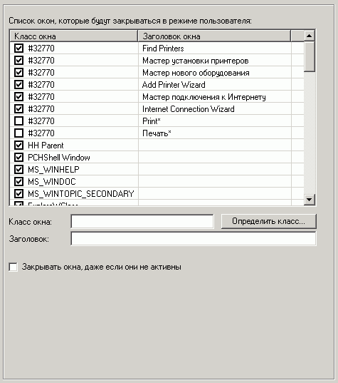

Здесь можно установить окна, которые будут автоматически закрываться, в случае если их запустит какое-либо приложение.
Запреты нужно устанавливать только на потенциально-опасные окна.
Каждое окно характеризируется своим уникальным именем класса и заголовком.
Имя класса для всех диалоговых окон "#32770".
Для определения класса окна можно воспользоваться встроенной утилиткой.
Если не указать заголовок окна, а указать только класс, то будут запрещены все окна с этим именем класса. Если же наоборот, то будут запрещены все окна с данным заголовком.
Если указать и имя класса и заголовок, то будет запрещено только одно такое окно.
Также можно использовать стандартные маски - * и ?
По умолчанию закрываются только активные окна, но включив опцию "Закрывать окна, даже если они не активны", можно добиться закрытия и фоновых неактивных окон.